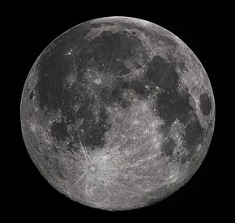

THE UNIVERSE BEGAN WITH AN EXPLOSION OF SPACE ITSELF.THIS EXPLOSION IS KNOW AS THE BIG BANG.THE BIG BANG OCCURED 13.8 BILLION YEARS AGO WHEN THE UNIVERSE BEGAN AS A TINY, DENSE, FIREBALL THAT EXPLODED.DUE TO EXTREMELY HIGH DENSITY AND TEMPERATURE, SPACE EXPANDED, THE UNIVERSE COOLED, AND THE SIMPLEST ELEMENTS FORMED. GRAVITY GRADUALLY DREW TOGETHER TO FORM THE FIRST STARS AND GALAXIES.

THE SUN IS A STAR AT THE HEART OF OUR SOLAR SYSTEM. ITS GRAVITY HOLDS THE SOLAR SYSTEM TOGETHER. THE SUN WAS FORMED 4.5 BILLION YEARS AGO, WHEN A CLOUD OF DUST AND GAS CALLED A NEBULA COLLAPSED UNDER ITS OWN GRAVITY. AS IT DID, THE CLOUD SPUN AND FLATTENED INTO A DISK, WITH OUR SUN FORMING AT ITS CENTER. THE DISKS OUTSKIRTS LATER ACCRETED INTO OUR SOLAR SYSTEM, INCLUDING EARTH AND OTHER PLANETS.

THE MOON IS KNOWN TO BE THE EARTHS ONLY NATURAL SATELLITE. THE MOON IS THE BRIGHTEST CELETIAL OBJECT IN THE SKY DURING THE NIGHT AND THE SOURCE OF ITS LIGHT IS FROM THE SUN(THE MOON REFLECTS THE LIGHT FROM THE SUN). ACCORDING TO SCIENTIST THE MOON IS SAID TO HAVE FORMED IN A TREMENDOUS COLLISION KNOW AS THE COLLISION RING. A MASSIVE OBJECT CALLED THEIA WHICH IS NAMED AFTER A MYTHOLOGICAL GREEK TITAN WHO IS THE SAID TO BE THE GODDESS OF THE MOON.THIS OBJECT CALLED THEIA SMASHED INTO EARTH AND STARTED FLINGING ROCKS INTO SPACE. THESE ROCKS STARTED REVOLVING AROUND THE EARTH AND LATER ON FORMED THE MOON.
THE EARTH IS THE THIRD PLANET IN OUR SOLAR SYSTEM AND ALSO KNOWN AS THE FIFTH LARGEST PLANET. THE EARTH IS THE ONLY PLANET IN THE UNIVERSE KNOWN AND CONFIRMED TO HOST LIFE. IT IS ALSO THE ONLY PLANET KNOWN FOR SURE TO CONTAIN OR HAVE LIQUID WATER ON ITS SURFACE. THE EARTHED FORMED OVER 4.6 BILLION YEAR AGO OUT OF A MIXTURE OF DUST AND GAS AROUND THE YOUNG SUN. IT GREW LARGER THANKS TO COUNTLESS COLLISIONS BETWEEN DUST PARTICLES, ASTEROIDS, AND OTHER GROWING PLANETS INCLUDING ONE LAST GIANT IMPACT THAT THREW ENOUGH ROCK, GAS, AND DUST INTO SPACE TO FORM THE MOON (THE COLLISION RING).